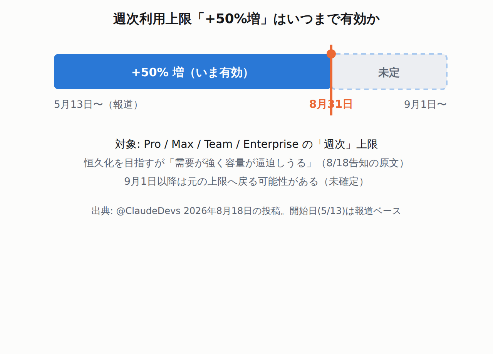

Claude Codeの週次利用上限「+50%増」は8月31日まで延長。9月以降は元に戻る可能性がある8月18日に@ClaudeDevsが告知した内容で、当サイトでは取り上げ損ねていた続報です。対象はPro / Max / Team / Enterpriseの週次上限。「恒久化を目指すが容量が逼迫しうる」とあり、9月1日以降は保証されていません。上限まで使う現場は、この日付を前提に重い作業の配分を考える材料になります。
Claude Code 2.1.238で、プロジェクトの.mcp.jsonが書いたコマンドはフォルダを信頼するまで走らなくなったヘッダーを生成するheadersHelperに信頼ダイアログの承認が必須になり、認証情報の環境変数も渡らなくなりました。非対話のclaude -pでも同じなので、CIから使っているなら確認が要ります。前日の2.1.237で入った出力スタイル「Concise」も同じ節に載せています。
We're extending the 50% increase to weekly Claude Code limits through August 31.
We hope to make this a permanent change to our plans, but strong demand for our models means that capacity may be tight over the coming weeks. We'll keep you posted as things develop.
つまり「恒久化を目指すが約束はできない」という位置づけです。9月1日以降も続く保証はありません。

+50%増は8月31日まで。9月1日以降は未確定(元の上限へ戻りうる)。開始日5/13は報道ベース
対象は「週次」の上限で、プランはPro / Max / Team / Enterprise。短時間(5時間)ごとの枠ではなく、週単位の枠が対象です。原文の「weekly Claude Code limits」に沿った記載で、当サイトでは実際の枠の数値は測っていません。
Added a built-in "Concise" output style: Claude leads with results and skips preamble and narration, while doing the work just as thoroughly. Select it under Output style in /config.
結果から先に書き、前置きと途中経過のナレーションを省きます。「作業そのものは同じだけ丁寧にやる(doing the work just as thoroughly)」と明記されているので、省くのは説明の量であって作業の中身ではありません。
2.1.238から、このコマンドはフォルダの信頼ダイアログを承認するまで走りません。非対話の claude -p でも同じです。
CHANGELOG 2.1.238 の原文（信頼の要求）
MCP `headersHelper` in a project `.mcp.json`, and inline MCP servers in project or `--add-dir` agent files, now require that folder's trust dialog to have been accepted (also under `claude -p`)
MCP `headersHelper` from a project `.mcp.json`, plugin, or agent file runs without inherited credential env vars; user, managed and claude.ai-scope helpers now run from the Claude config dir
同じ版で、手が覚えている操作も2つ変わりました。
操作
2.1.237まで
2.1.238から
フルスクリーンで Ctrl+L / Cmd+K
2回続けて押すと /clear が走った
常に再描画だけ。2回押しの /clear は廃止
claude mcp list / get
無効にしたサーバーにも接続して疎通確認
接続せず ⊘ Disabled と表示するだけ
非対話で動かしているなら先に確認。信頼ダイアログの承認は claude -p でも必要です。CIやスクリプトからプロジェクトの .mcp.json を使っている場合、そのフォルダが承認済みかどうかで結果が変わります。
一次資料
ClaudeDevs(Anthropic公式)「We're extending the 50% increase to weekly Claude Code limits through August 31.」X (旧Twitter), 2026年8月18日.
参照箇所を見る参照箇所(投稿全文): 「We're extending the 50% increase to weekly Claude Code limits through August 31. We hope to make this a permanent change to our plans, but strong demand for our models means that capacity may be tight over the coming weeks. We'll keep you posted as things develop.」本文取得はcdn.syndication.twimg.comのtweet-result(投稿ID 2089798442306711646)。当事者の公式アカウントによる告知のため一次資料とした。https://x.com/ClaudeDevs/status/2089798442306711646（2026年8月21日参照）
一次資料
Anthropic「CHANGELOG.md (2.1.237 / 2.1.238)」anthropics/claude-code (raw.githubusercontent.com).
参照箇所を見る2.1.237の参照箇所: 「Added a built-in "Concise" output style: Claude leads with results and skips preamble and narration, while doing the work just as thoroughly. Select it under Output style in /config」「Fixed prompt caching for sessions using an LLM gateway or custom base URL」。2.1.238の参照箇所: 「MCP `headersHelper` in a project `.mcp.json`, and inline MCP servers in project or `--add-dir` agent files, now require that folder's trust dialog to have been accepted (also under `claude -p`)」「MCP `headersHelper` from a project `.mcp.json`, plugin, or agent file runs without inherited credential env vars; user, managed and claude.ai-scope helpers now run from the Claude config dir」「A catalog entry's `headersHelper` runs only when you install or update that plugin, after its command is shown; `claude plugin install/update` ask `[y/N]` (or pass `-y`)」「Changed Ctrl+L and Cmd+K in fullscreen to always just repaint — the double-press `/clear` shortcut was removed, and 1-row nvim terminals no longer trigger automatic `/clear` loops」「Changed `claude mcp list` and `claude mcp get` to show disabled servers as `⊘ Disabled` instead of connecting to them for a health check」。朝5時の編集時点ではCHANGELOG末尾の最新記載は2.1.237で、2.1.238の記載は当日中に取得し直して確認した。https://raw.githubusercontent.com/anthropics/claude-code/main/CHANGELOG.md（2026年8月21日参照）
一次資料
AWS「What's New (RSS)」aws.amazon.com/about-aws/whats-new/recent/feed, 2026年8月20日分.
参照箇所を見る参照箇所: 8月20日付の項目は「Generative AI Inference Recommendation for Amazon SageMaker」「AWS Direct Connect introduces inbound prefix controls」「AWS Marketplace now supports category-based notifications」。読者の本線(ECS/Fargate/ALB/CloudFront/IAM/S3/VPC)に該当する新規が無いことの根拠。8/19付のIAM 20ポリシー・ロンドン新AZは8/20号で既報。https://aws.amazon.com/about-aws/whats-new/recent/feed/（2026年8月21日参照）